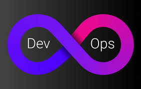
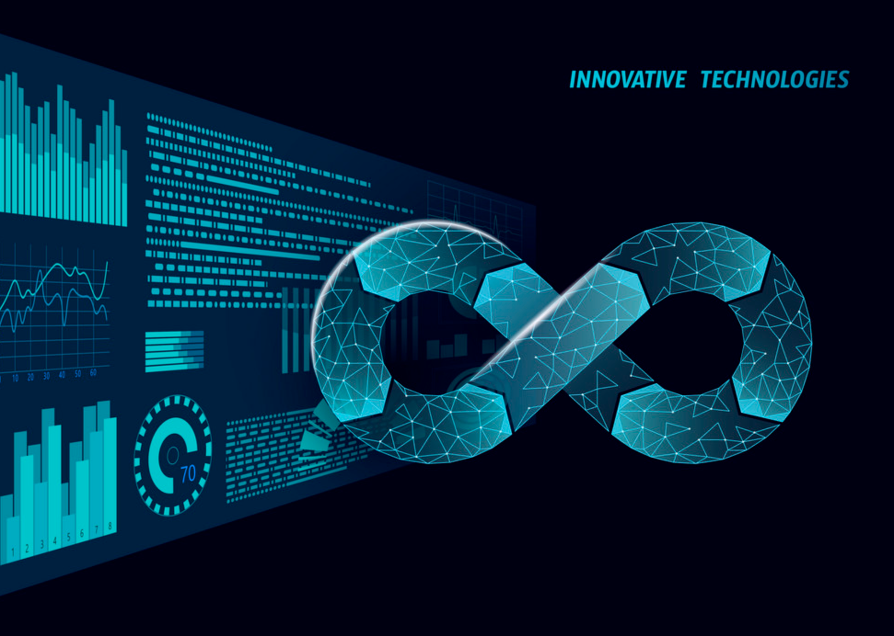

Intro
Experienced Solutions Architect with 20+ years of experience designing and implementing cutting-edge solutions across various platforms. Skilled in utilizing Consul, Vault, and Nomad for workload management for a Kubernetes like environment, as well as deploying Kubernetes to public and private clouds. Using automation and IAC to deployment workload. Proficient in leading cross-functional teams, driving successful project outcomes through effective collaboration and strategic planning. Demonstrated expertise in architecting and deploying complex systems with a focus on DevOps and microservices applications. Passionate about leveraging emerging technologies to optimize performance, enhance scalability, and drive business growth.
Work

- Systems and DevOps Engineer
- Network and Systems Automation
- Infrastructure as Code (IaC)
- CI/CD Pipeline Development
- Containerization with Docker
- Orchestration with Hashicorp Consul, Vault, and Nomad
- Cloud Infrastructure Management (AWS, Azure, GCP)
- Configuration Management (Ansible, Puppet)
- Monitoring and Logging (Prometheus, Grafana, ELK Stack)
- Microservices Architecture
- Continuous Integration and Deployment (CI/CD)
- Disaster Recovery and Backup Solutions
- High Availability and Load Balancing
- Security and Compliance Automation
- Network and Systems Automation
- Version Control and Collaboration (Git, GitHub, GitLab)
- Performance Tuning and Optimization
- Scalability Engineering
- Infrastructure Monitoring and Alerting
- Deployment Automation
- Scripting and Automation (Python, Bash)
- API Management and Integration
- Blue-Green and Canary Deployments
- Site Reliability Engineering (SRE) Practices
About

I am an experienced Solutions Architect with over 20 years of expertise in designing and implementing cutting-edge solutions across various platforms. My proficiency spans utilizing Consul, Vault, and Nomad for workload management in Kubernetes-like environments, as well as deploying Kubernetes to both public and private clouds. I excel in using automation and Infrastructure as Code (IAC) to streamline workload deployments.
My career has been marked by leading cross-functional teams and driving successful project outcomes through effective collaboration and strategic planning. I have demonstrated expertise in architecting and deploying complex systems, with a particular focus on DevOps and microservices applications.
Passionate about leveraging emerging technologies, I am dedicated to optimizing performance, enhancing scalability, and driving business growth. Whether it's automating deployments or designing robust infrastructure, my goal is to deliver innovative solutions that meet and exceed client expectations.